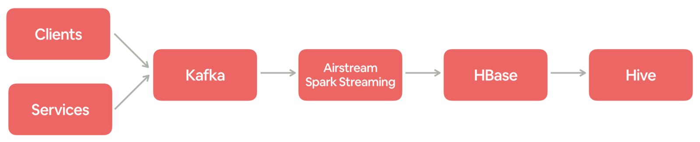
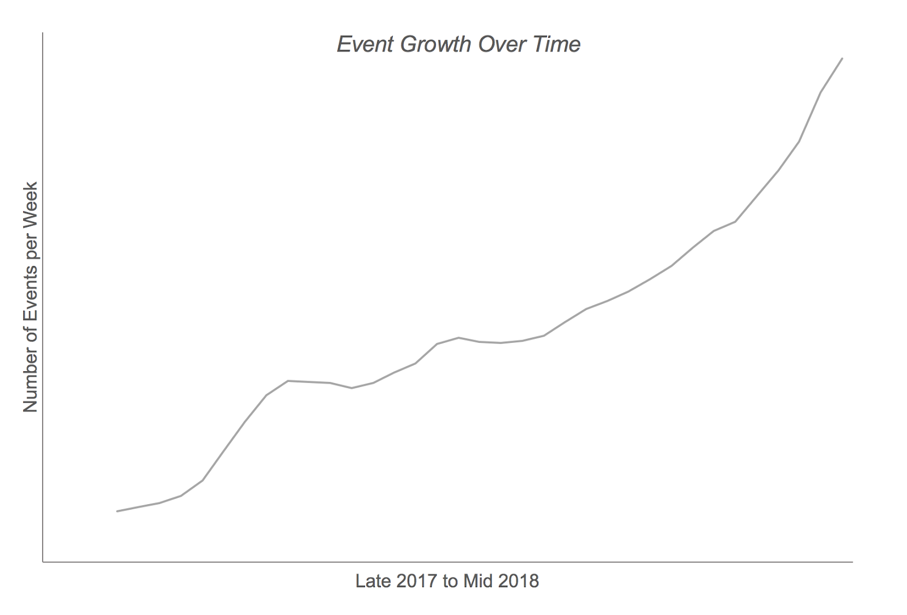
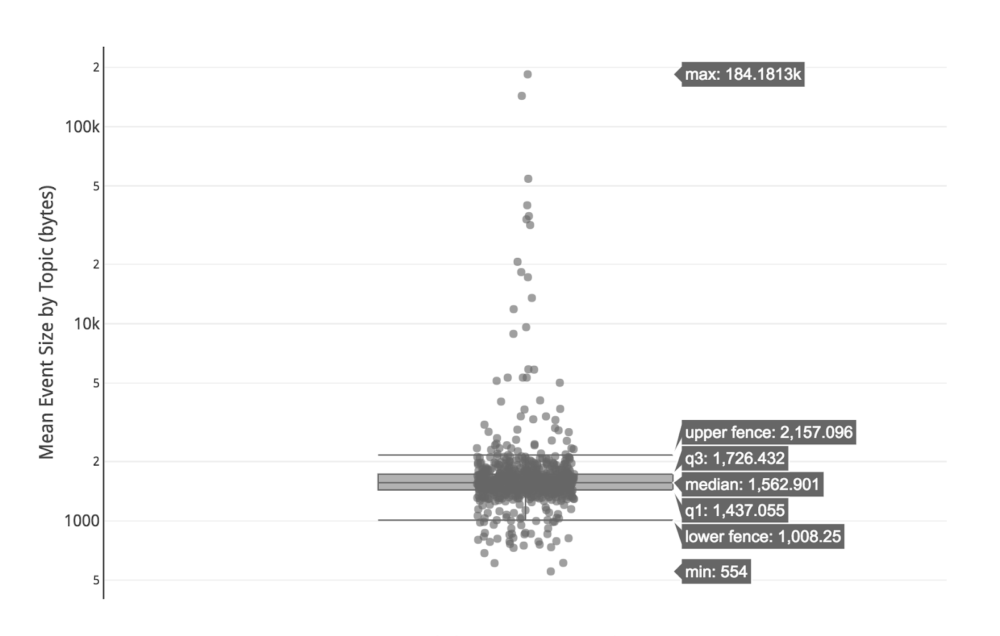
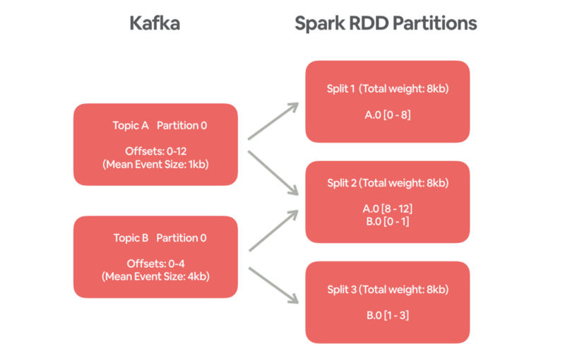
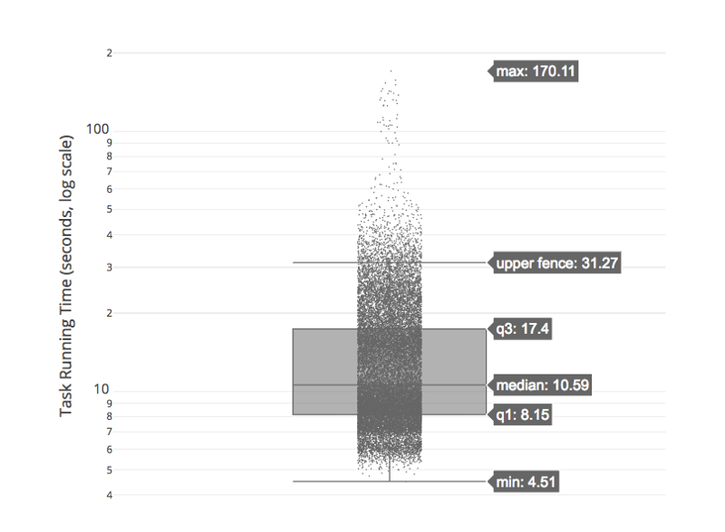

Airbnb 日志事件获取
日志事件从客户端（例如移动应用程序和 Web 浏览器）和在线服务发出，其中包含行为或操作的关键信息。每个事件都有一个特定的信息。例如，当客人在 Airbnb.com 上搜索马里布的海滨别墅时，将生成包含位置，登记和结账日期等的搜索事件。
在 Airbnb，事件记录对于我们理解客人和房东，然后为他们提供更好的体验至关重要。它为业务决策提供信息，并推动工程功能（如搜索，实验，付款等）中的产品开发。例如，日志事件是训练机器学习模型以进行列表搜索排名的主要来源。
日志事件近实时地摄取到数据仓库中，并作为许多 ETL 和分析作业的数据来源。事件从客户和服务商发布到 Kafka。Spark streaming 作业（建立在 Airstream 之上，Airbnb 的流处理框架）不断从 Kafka 读取并将事件写入 HBase 以进行重复数据删除。最后，每小时将事件从 HBase 转储到 Hive 表中。 由于日志记录事件传输到许多 pipelines 并为整个公司的众多仪表板提供数据，因此确保它们及时写入数据仓库并满足 SLA 是非常重要的。

产生的事件条数非常多并且在迅速增加。这对现有的数据处理基础设施构成了严峻的挑战，特别是从 Kafka 到 HBase 的事件摄取 Spark streaming 作业。在本文，我们将讨论扩展基础架构所面临的挑战，以及可以支持更高吞吐量和更高效率的解决方案。

挑战
Spark 的并行度由 Kafka 分区数量决定
在当前的 Spark Kafka connector 中，Kafka 分区与 Spark 任务之间存在一对一的对应关系。也就是说，一个 Spark 任务从一个 Kafka 分区读取数据，以确保在 Spark 中处理事件时对事件进行排序。但是，通过这种设计，我们不能通过增加并行度和分配更多的资源来简单地扩展 Spark streaming 作业。
要增加 Spark 并行度和吞吐量，必须为具有高 QPS 事件的主题分配更多的 Kafka 分区。不幸的是，这是一个相当笨的过程，并且在存在大量主题（不断增加）时可扩展变得很棘手。
另一个问题是为 Kafka 中的主题分配更多的分区不会改变之前已经存在 Kafka 中消息的分区。改变分区仅适用于新的事件。我们预测事件的高峰并预先为受影响的 Kafka 主题分配更多分区是不切实际的。任何时候都可能出现高峰，可能是由于各种原因，例如新产品功能或一些假期。
当事件的数量达到临界水平时，通常无法以足够快的速度从 Kafka 主题中摄取事件并写入到数据仓库。特别是在数据存在倾斜的时候，这个问题更加严重。
事件的倾斜和大小不一
记录不同消息的事件，其数量和大小有很大差异。有些事件非常稀疏的，有些可能有几个数量级的 QPS。事件的大小可以从几百字节到几百千字节。下图显示了 Kafka 主题的平均事件大小的变化（请注意Y轴是对数刻度）。虽然我们尝试为更大的事件主题分配更多的分区，但 Kafka 分区仍然存在严重的数据倾斜。

对于数据产品来说，偏斜是一个严重的问题。在这种情况下，一些 Spark 任务比其他任务需要更长的时间才能完成。它会导致许多 executors 空闲并浪费资源，因为当一个 stage 中的所有 tasks 完成时，Spark 作业才会进入下一个 stage。 如果主题没有足够的分区，那么具有最大事件的 Kafka 分区将花费很长的时间去处理数据。这会导致 Spark streaming 作业滞后，因为这些作业是按顺序处理的。
近实时摄取数据
由于上述挑战，Spark streaming 作业的吞吐量几乎没有很大的提升空间。 一旦作业由于各种问题（例如错误的数据节点或 Hive Metastore 中断）而出现延迟，这就需要很长时间才能消费这些滞后的数据。
例如，我们有一个间隔为2分钟的作业平均在1分钟内处理一个批次。 如果作业滞后4小时，这时候我们需要4个小时才能消费滞后的数据。如果我们希望它在1小时内消费完，则需要4倍的资源。 除了从事故中恢复之外，还需要很多资源来处理季节性峰值。因此，对于近实时摄取，在吞吐量方面具有额外的资源是至关重要的。
解决方案
在理想的系统中，我们希望能够横向扩展 Spark streaming 作业（即通过增加并行度和分配更多的资源来实现更高的吞吐量）。我们还希望这些作业能够进行负载平衡，因此每个任务都需要大致相同的时间来读取 Kafka 中的数据。
为实现这两个目标，Airbnb 数据平台团队开发了一个 balanced Spark Kafka reader，可满足这两个要求。
Balanced Spark Kafka Reader
对于流数据的摄取，事件的有序不是必需的，因为摄取的事件最后都单独存储到 HBase 中。这使得我们能够重新思考模型并寻找解决扩展问题的新方法。因此，我们为 Spark 创建了一个新的 balanced Kafka reader，主要有以下特点：
允许任意数量的分片（splits），因此可以增加并行度以提供更高的吞吐量；
根据事件的数量和大小计算分片数量。
在高层次上，balanced Kafka reader 工作流程如下：它预先计算每个主题中的平均事件大小，并将其保存在 CSV 文件中；
当 Spark streaming 作业实例化 balanced Kafka reader 时，它会传递一个额外的参数 numberOfSplits 来指定所需的并行度；
对于每个 Kafka 分区，它计算需要读取的偏移范围（从当前偏移到最新偏移），如果设置了 maxRatePerPartition 将会进行限流；
它使用平衡分区算法（balanced partitioning algorithm）将偏移范围子集均匀分配给每个分片；
每个 Spark 任务根据分片从 Kafka 读取一个或多个偏移范围。
下面是一个简单的例子，其包含2个 Kafka 主题和3个分片。主题 A 中的事件具有更高的 QPS 但是大小比主题B小。balanced Kafka reader 将这些事件的子集组合在一起，使得每个分片读取来自 Kafka 的1/3数据。 一个分片（分片2）将包括来自主题A的4个事件和来自主题B的1个事件，因此每个分片的总大小为8kb。

注意，通过动态计算平均事件大小，将来可以改进步骤1，从而更好地考虑事件大小频繁变化的主题以及新增的新主题。
平衡分区算法
将偏移范围均匀地分配给分片的问题非常类似于装箱问题（bin packing problem）。 最优解决方案的复杂算法和非最优解的快速算法确实存在非线性计算复杂性。然而，我们并不会使用它，因为我们的问题有些不同：1）分片的数量是固定的；2）偏移范围可以分成更小的部分。
我们开发了一种简单而有效的算法，而不是采用复杂的现有算法，如下所示：
- 根据上面的公式计算每个分片需要处理的数据量（weight-per-split）。对于不在预先计算列表中的新事件类型，可以改用所有事件类型的平均大小；
- 从分片0开始，对于每个偏移范围进行如下操作
- 如果当前偏移范围的总大小小于 weight-per-split，则将这个偏移范围分配给当前分片；
- 如果大于 weight-per-split，则将这个偏移范围进行拆分，将合适的偏移范围分配给当前分片；
- 如果当前分片处理的数据量大于 weight-per-split，则将多余的偏移范围分配个下一个分片。
该算法的时间复杂度为 O(number of splits) 。它只是按顺序遍历分片和 Kafka 分区。结果是大多数分片处理的数据量是非常平衡的，除了最后的分片可能处理少一些的数据。在一次测试中，估计的 weight-per-split 为 489,541,767，分片为20k。 最小和最大分片处理的数据量分别为 278,068,116 和 489,725,277。第二小的分片处理的数据量为 489,541,772。排除最小的分片，第二小的分片与最大的分片之间的差异为 183,505（仅为最大分片的0.04％）。
平衡分区算法在测试和生产中都表现良好。Spark 任务运行时间的变化（如下图所示）比原始的 Spark Kafka reader 分布更均匀。大多数任务在2分钟内完成，其中一小部分花了2到3分钟。与大范围的事件 QPS 和大小相比，任务运行时间的微小差异表明了平衡分区算法的令人难以置信的有效性。通过考虑事件大小和数量，可确保摄取工作负载均匀分布在 executors中。

总结
由于得益于 balanced Kafka reader，从 Kafka 消费的 Spark 应用程序现在可以横向扩展，并具有任意并行度。平衡分区算法很简单，并且已被证明非常有效。由于这些改进，用于摄取日志记录事件的 Spark streaming 作业可以处理比以前多一个数量级的事件。系统的稳定性已经提高了很多，以至于自部署变更以来我们没有看到任何明显的滞后。
对于未来的事件流量增长和峰值增加，用于处理事件摄取的 Spark streaming 作业将能够平稳有效地处理它们。不再担心不同分区之间数据发生倾斜，如果由于底层基础设施问题导致作业发生延迟，它将能够迅速赶上。
我们在这里解决的问题在大规模 Spark 应用程序和数据应用程序非常常见。重要的是要仔细了解数据本身及其在每个步骤中的处理方式，这可能会揭示潜在的瓶颈，数据倾斜以及优化机会。例如，Spark 提供了一个很好的 UI，其中显示了每个作业的 DAG，从中我们可以了解作业是如何执行的，以及是否可以通过缓存，重新分区等来调整作业以获得更好的性能。